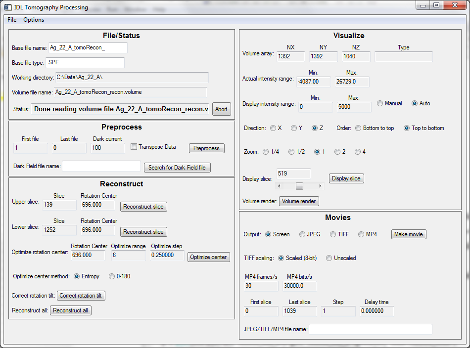

GSECARS Tomography Processing Software
This document describes the IDL software used for reconstructing and viewing
tomography data at CARS. All of these IDL routines are available in a
tar file. The reconstruction is
normally done using the GridRec reconstruction code, which is written in
C. The GridRec code is also available in another tar file.
The normal user interface for this software is through the IDL GUI routine
tomo_display. The following screen shot shows the tomo_display interface.

We have broken the tomography data processing down into 3 steps
Preprocessing
The preprocessing routine
read_tomo_data.pro
performs the following steps:
Reconstruction
The reconstruction routine
reconstruct_volume.pro
performs the following steps:
- Reads the 3-D (X, Y, Theta) file from the preprocessing step into memory
(read_tomo_volume.pro)
- For each row (also called Y or slice) in the data calls
reconstuct_slice.pro
which performs the following steps:
- Builds a corrected sinogram
(sinogram.pro).
sinogram peforms logarithmization, corrects the rotation axis to
be in the center of the image, normalizes to air on each side of the object,
etc.
- Removes ring artifacts
(remove_tomo_artifacts.pro)
- Filters the sinogram with a high-pass filter
(tomo_filter.pro).
- Reconstructs the slice with an FFT-based algorithm (gridrec.pro)
or filtered backprojection
(backproject.pro)
- Writes the reconstructed data back to disk as a single 3-D file (X, Y, Z)
(write_tomo_volume.pro)
Visualization
The standard IDL procedures TV and TVSCL are very useful for
displaying 2-D data. IDL's SLICER3 procedure is good for displaying 3-D data.
In addition there is set of
GSECARS-developed routines for visualizing
2-D and 3-D tomography (or other) data.
Suggestions and Comments to:
Mark Rivers : (rivers@cars.uchicago.edu)
Last modified: Dec. 3, 2010